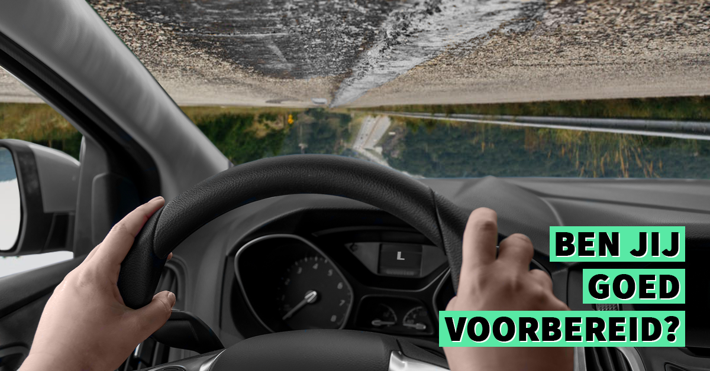
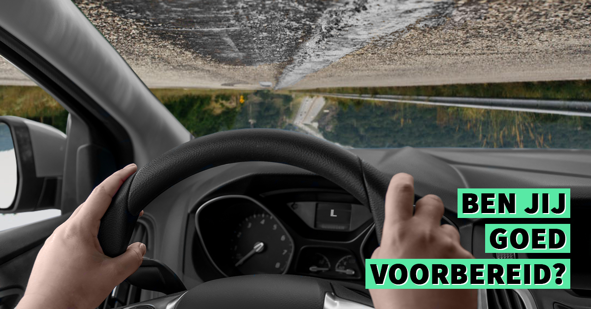
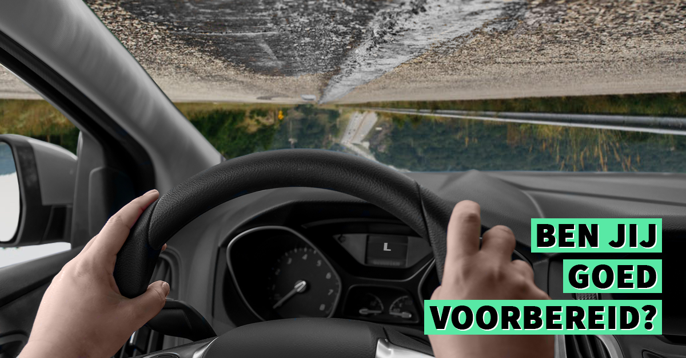

PROEFLES
Weet u het nog niet zeker maar wilt u het toch even proberen bij flexi. Dat kan, want met een vrijblijvende intakeles zit jij nergens aan vast. Jij voelt meteen of er een klik is tussen jou en de rijinstructeur. Is er geen klik, dan zijn er nog andere FLEXi rijinstructeurs. Ook bij andere rijinstructeurs geldt de vrijblijvende intakeles! Wel zo mooi.
Gratis Proefles
 
